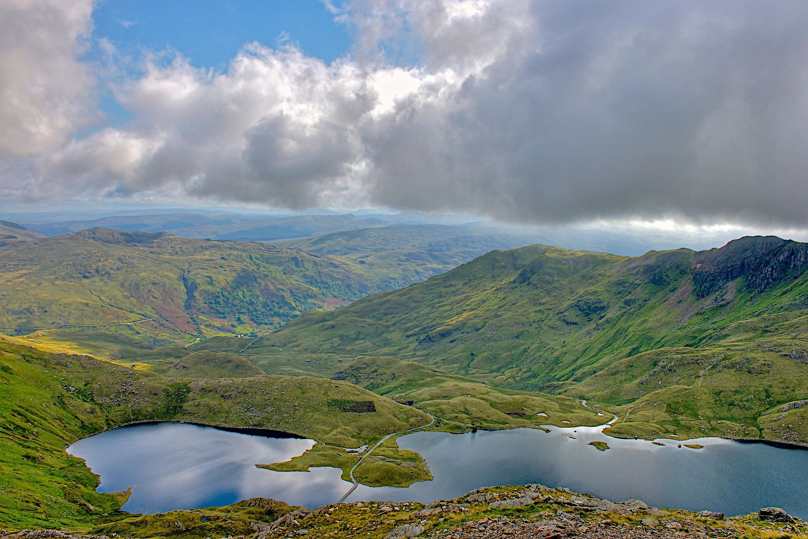
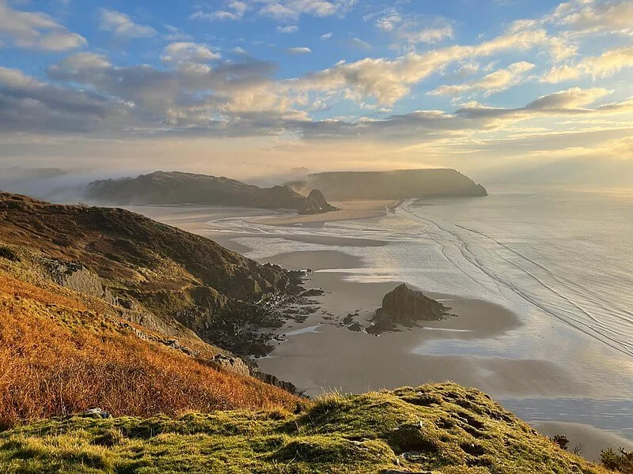
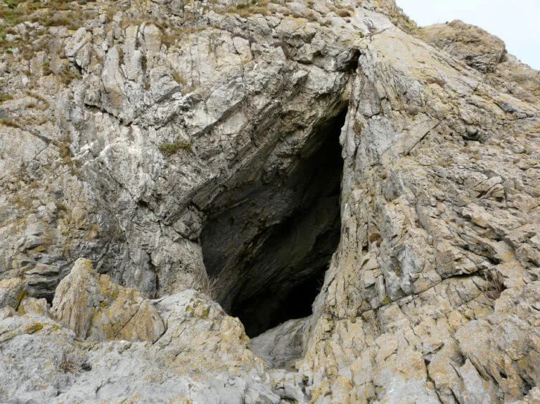
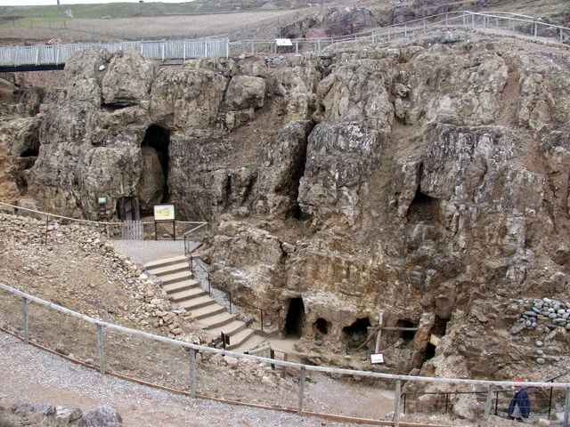
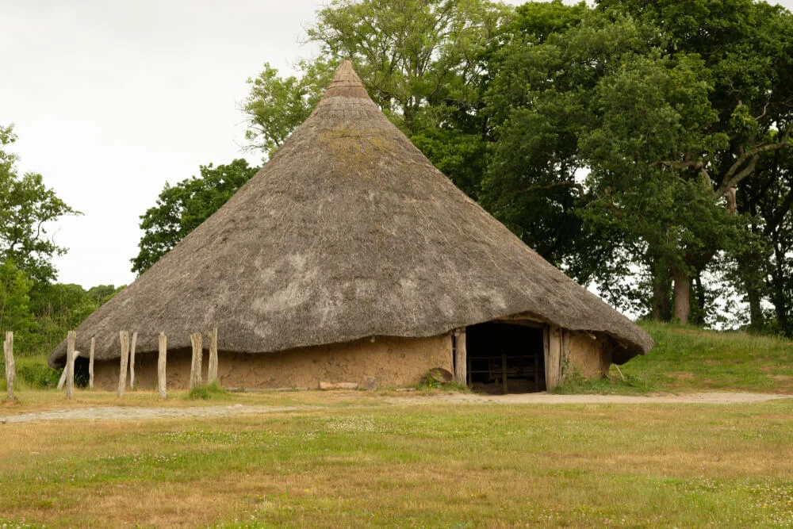
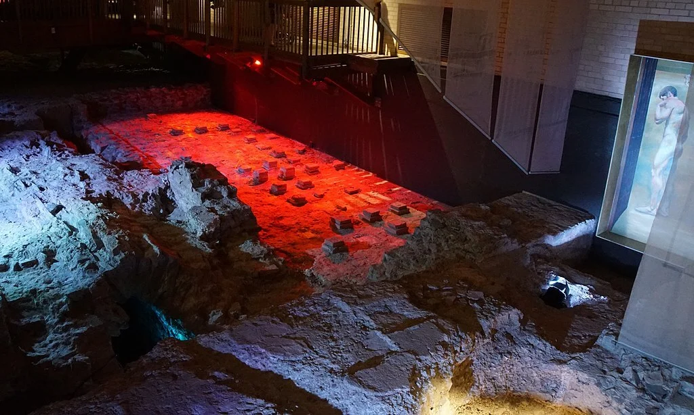
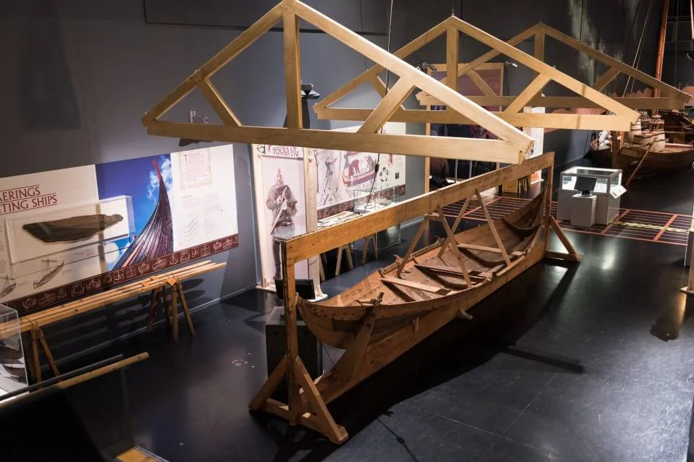
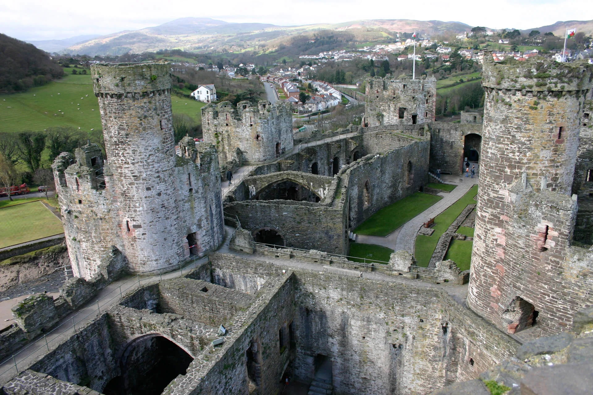
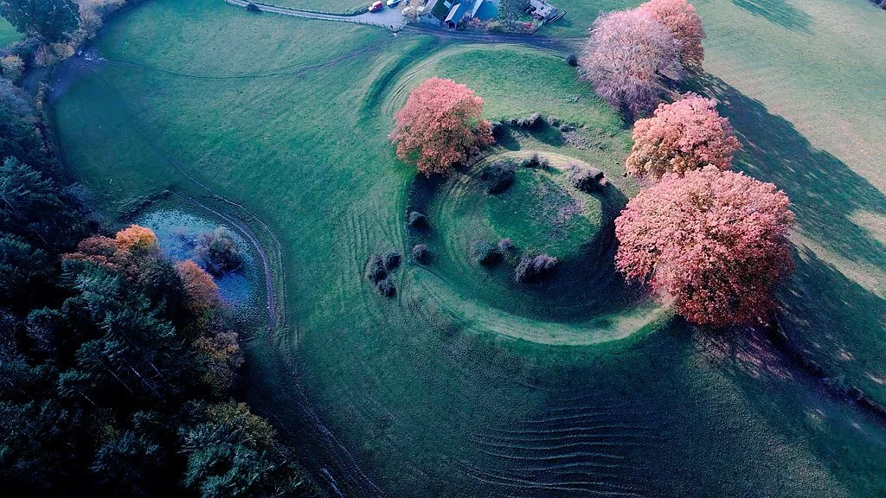

Welcome to Wales, a land of breathtaking landscapes and scenic wonders. Discover the rugged majesty of
Snowdonia's mountains, the rolling hills of the Brecon Beacons, and the stunning coastline of
Pembrokeshire. Wander
through picturesque valleys, enchanting forests, and charming villages. Let Wales' natural beauty
captivate your soul on an unforgettable journey.

Snowdonia National Park
Brecon Beacons National Park
Pembrokeshire Coast National Park
Llyn Peninsula

The Gower Peninsula
Culture
Delight in Wales' diverse culture, where hearty cuisine like cawl and Welsh cakes reflects its rich
history. Embrace the warm and welcoming Welsh people, known for their strong sense of community and love
for the arts.
Witness its evolving political landscape, cherishing traditions while embracing progressive values.
Language
Welsh (Cymraeg) is an ancient Celtic tongue, preserving Wales' cultural
essence. Bilingualism thrives, adding depth to daily life and reinforcing its unique
character.
Welsh cuisine combines tradition and innovation, with dishes like cawl
(stew) and bara brith (fruit bread), reflecting the nation's agricultural heritage and
culinary creativity.
Celebrated on March 1st, St. David's Day honors Wales' patron saint.
Festivities include parades, traditional dress, and daffodils, symbolizing national
pride.
More than a sport, rugby unites Wales. The Millennium Stadium roars as
fans rally behind their team, embodying the nation's competitive spirit and camaraderie.
Wales' folklore weaves tales of dragons, Arthurian legends, and
mystical creatures. These stories connect generations and preserve the country's
enchanting spirit.
A cultural highlight, the Eisteddfod gathers artists, musicians, and
poets in a celebration of Welsh creativity. Competitions and performances honor
tradition and innovation.
Literary paradise in the heart of Wales, the Hay Festival draws writers
and readers worldwide to engage in meaningful dialogue, fostering intellectual exchange.
A historical gem, Cardiff Castle's walls echo with centuries of stories. From Roman
origins to opulent Victorian designs, it's a testament to Wales' architectural heritage
and resilience.
Welsh history is a tapestry of resilience and cultural identity. From ancient Celtic tribes to Roman
occupation, Wales emerged as a distinct nation with its language and traditions. Conquests, rebellions,
and
industrialization shaped its trajectory. Today, Wales stands proudly, preserving its heritage while
embracing modernity, a testament to its enduring spirit.

33,000 BP
Goat's Hole
Wales has several ancient sites where you can explore the remains of Mesolithic settlements,
including Goat's Hole, also known as the "Red Lady Cave," in Gower Peninsula.
c. 1800 BCE
Great Orme Copper Mines
The Great Orme Copper Mines in Llandudno are among the world's oldest metal mines. Visitors
can take guided tours to learn about the Bronze Age mining techniques and the significance
of copper mining in
ancient Wales.


c. 600 BCE
Castell Henllys Hillfort
Castell Henllys in Pembrokeshire is a reconstructed Iron Age hillfort where tourists can
experience life as it was during this period. Visitors can participate in various activities
and events showcasing
ancient crafts, cooking, and daily routines.
c. 1st century CE
Caerleon Roman Fortress and Baths
The Roman fortress at Caerleon, near Newport, offers visitors a glimpse into the Roman
occupation of Wales. You can explore the well-preserved amphitheater, barracks, and Roman
baths.

6th century CE
St. Davids Cathedral
St. Davids Cathedral in Pembrokeshire is the final resting place of Saint David, the patron
saint of Wales. It is a significant religious and historical site, attracting visitors with
its stunning
architecture and rich history.
8th-10th centuries CE
Holyhead Maritime Museum
Holyhead on Anglesey has a maritime museum that highlights the Viking heritage of the region.
The museum showcases exhibits related to Viking shipwrecks and the impact of their presence
in Wales.


1283 CE
Conwy Castle
Conwy Castle, a UNESCO World Heritage site, is a formidable fortress built by Edward I
during his conquest of Wales. Visitors can explore its impressive walls, towers, and
breathtaking views of the
surrounding landscape.
early 15th century
Sycharth
Sycharth was the home of Owain Glyndŵr, the Welsh ruler who led a rebellion against English
rule. Although the original castle is no longer standing, the site offers visitors a chance
to explore its history
and significance in Welsh nationalism.

19th century
Big Pit National Coal Museum
Located in Blaenavon, this former coal mine offers a captivating underground tour, providing
insight into the lives of Welsh coal miners during the Industrial Revolution.
1999-present
Senedd and Cardiff Bay
The Senedd is the Welsh Parliament building in Cardiff Bay. Tourists can visit the Senedd and
learn about the modern-day Welsh devolution and the ongoing quest for greater independence.